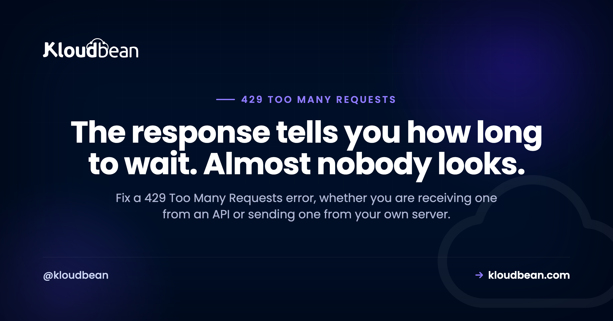

Error Code 429 Too Many Requests: Read Retry-After Before You Retry

A 429 means rate limiting. Something counted your requests, decided there were too many in too short a window, and refused this one. Before you change anything it is worth deciding which side of it you are on, because there are two completely different articles hiding in this status code. Either you are the client getting refused by somebody's API, in which case your job is to back off properly, or you are the server sending 429s to your own visitors, in which case your job is to make sure you are counting the right thing. The second case is where most of the damage happens.
If you are receiving 429s, read the Retry-After header on the response, wait that long, and implement exponential backoff with jitter for when it is absent. Retrying immediately makes the situation worse. If your own server is returning 429s, check that your rate limiter is counting real client addresses rather than a proxy, because behind a CDN an unconfigured limiter treats all of your traffic as one very busy client and blocks everybody.
Part one: you are receiving 429s
Read the response, it usually contains the answer
Rate-limited APIs generally tell you what happened and when to come back. Look at the headers before writing any retry logic:
curl -sD - -o /dev/null https://api.example.com/v1/things \
-H "Authorization: Bearer $TOKEN" | grep -iE "retry-after|ratelimit|x-rate"You are looking for two kinds of information. Retry-After gives you a number of seconds, or occasionally an HTTP date, and it is an instruction rather than a suggestion. Alongside it many APIs send a limit, a remaining count, and a reset timestamp, which let you avoid the 429 entirely by slowing down before you hit the wall.
Honouring Retry-After is the single highest-value change most people can make here. Retrying instantly against a service that just told you to wait sixty seconds burns your quota, extends the block on some platforms, and on aggressive limiters gets your key throttled harder.
Back off properly, with jitter
When there is no Retry-After, exponential backoff is the correct pattern, and the jitter is not optional:
async function fetchWithBackoff(url, opts = {}, maxRetries = 5) {
for (let attempt = 0; attempt <= maxRetries; attempt++) {
const res = await fetch(url, opts);
if (res.status !== 429) return res;
const retryAfter = res.headers.get('Retry-After');
const waitMs = retryAfter
? Number(retryAfter) * 1000
: Math.min(2 ** attempt * 1000, 30000) + Math.random() * 1000;
await new Promise(r => setTimeout(r, waitMs));
}
throw new Error(`Rate limited after ${maxRetries} retries`);
}The Math.random() term is the part people leave out, and leaving it out causes a specific failure. Without jitter, every client that got rate limited at the same moment waits exactly the same interval and retries in unison, producing a synchronised burst that trips the limit again. You get a self-sustaining cycle of failures at regular intervals. Adding a random component spreads the retries out and breaks the pattern.
Two other guardrails worth having. Cap the maximum wait, since exponential growth reaches absurd numbers quickly. And cap the number of attempts, because a retry loop with no ceiling turns a temporary limit into a stuck job.
Stop making the calls instead
Backing off correctly handles the symptom. Reducing your request volume is the actual fix, and there are usually three easy wins.
Cache responses. If you request the same reference data repeatedly, cache it. Currency rates, product catalogues, and configuration do not need fetching per request. Redis in front of a third-party API commonly removes most of the traffic, and our caching patterns guide covers the shapes that work.
Batch where the API allows it. Many endpoints accept multiple identifiers per call. Fetching a hundred records one at a time when the API takes fifty per request is a hundredfold difference in request count.
Move the work into a queue. If a burst of user activity fans out into a burst of API calls, put a queue between them and process at a controlled rate. That converts a spike you cannot control into a throughput you can, which is exactly what background jobs are for.
Part two: your own server is sending 429s
This half gets far less coverage and causes far more trouble, because a misconfigured rate limiter looks exactly like an outage.
The mistake that blocks everyone
nginx rate limiting keys on a variable, and the common example keys on the client address:
limit_req_zone $binary_remote_addr zone=api:10m rate=10r/s;That is correct only if $binary_remote_addr is a real visitor. Put a CDN or proxy in front and your server stops seeing visitors entirely: every request arrives from the proxy. So the limiter counts all of your traffic as a handful of extremely busy clients and starts refusing legitimate users, seemingly at random, while your server load looks fine.
The fix is to restore the real client address before the limiter reads it, which means trusting the proxy's ranges and reading the header it sets. It is the same configuration that stops intrusion prevention banning your own proxy, described in our error 521 guide. Get that in place first, then write rate limits, because until you do, any limiter you configure is measuring the wrong thing.
nginx returns the wrong status code by default
A detail worth knowing because it quietly misleads everyone debugging your API. When limit_req rejects a request, nginx returns 503 Service Unavailable unless you tell it otherwise. A 503 says the service is down; a 429 says you are going too fast. Those mean very different things to a client, and well-behaved clients back off correctly on a 429 while a 503 suggests retrying might just work.
limit_req_zone $binary_remote_addr zone=api:10m rate=10r/s;
server {
location /api/ {
limit_req zone=api burst=20 nodelay;
limit_req_status 429;
add_header Retry-After 1 always;
proxy_pass http://127.0.0.1:3000;
}
}Set limit_req_status 429 and send a Retry-After. It costs one line each and it means clients can behave sensibly rather than guessing.
The burst and nodelay parameters are worth understanding rather than copying. Without a burst allowance, a strict rate feels broken to real users, because a single page load fires several requests in quick succession and legitimate browsing looks like a flood. A burst absorbs that. nodelay serves the burst immediately instead of queueing it, which is normally what you want for an interactive API.
Rate limit the endpoints that matter
Blanket limits are blunt. The endpoints worth protecting specifically are login and password reset, anything that sends email or SMS, search, and expensive report or export routes. A tight limit on login is genuinely valuable, while the same limit on your static assets makes the site feel broken.
limit_req_zone $binary_remote_addr zone=login:10m rate=5r/m;
location = /wp-login.php {
limit_req zone=login burst=3 nodelay;
limit_req_status 429;
}When the 429 is coming from something you forgot about
Not every 429 on your own site comes from a limiter you wrote. Several other things impose them, and the tell is usually that the pattern does not match any rule you remember configuring.
Security and login-protection plugins rate limit by design, and on WordPress they commonly limit the REST API and login endpoints. A CDN or WAF in front may apply its own rules, which produce 429s your server never sees and never logs. Some managed platforms rate limit at the edge. And your own outbound integrations can generate 429s that surface inside your application as failures rather than as HTTP responses to visitors.
# Is it your nginx doing it?
sudo grep -i "limiting requests" /var/log/nginx/error.log | tail -20That log line is definitive. nginx says limiting requests, excess: with the zone name when its own limiter fires. If you are seeing 429s and this log is silent, the limit is somewhere else, and the layers in front are where to look.
| Symptom | Cause | First check |
|---|---|---|
| Random legitimate users blocked, load is fine | Limiter keyed on the proxy address | Real client address restoration |
| Clients report 503 instead of 429 | limit_req_status not set | nginx location block |
| Failures repeat at a regular interval | Retries without jitter, synchronised | Backoff implementation |
| One integration fails at busy times | Third-party quota | Retry-After and quota headers |
| Only login or REST endpoints | Security plugin or targeted rule | Plugin settings |
| 429s with a clean nginx log | CDN, WAF, or edge rule | The layer in front |
| Normal browsing feels blocked | No burst allowance | Add a sensible burst |
A position on rate limiting
Rate limiting is worth having, and most of the pain comes from treating it as a security setting you enable rather than a behavioural rule you tune. A limit written without knowing what normal traffic looks like will either be too loose to help or tight enough to hurt real users, and the second failure is invisible to you because the affected people simply leave.
So: measure first, limit the specific endpoints that are actually attacked or expensive, always return 429 with Retry-After so clients can cooperate, and make sure you are counting real clients before you count anything at all. That last point is the one that turns a protective measure into an outage.
Where hosting fits
The two things that make rate limiting go wrong on your own server are configuration details: whether the limiter sees real client addresses, and whether nginx is returning the honest status code. Both are the kind of thing that gets set up once and then quietly misbehaves for months.
On Kloudbean, nginx comes configured rather than left at defaults, Cloudflare is available as a paid add-on and included for enterprise accounts so the proxy and origin are set up together rather than bolted on afterwards, and IP access control gives you allow and deny rules with CIDR ranges for the cases where a blunt block is genuinely what you want. Managed Redis in the same dashboard is what makes the caching-instead-of-retrying approach practical.
The honest limit: no platform can tell you what your correct request rate is, and none of this stops a third party from throttling your key. What it removes is the misconfiguration that makes your own limiter block your own users.

Related reading
For neighbouring status codes, 403 Forbidden, 400 Bad Request, and 503 after a deploy, which is what nginx returns for rate limits by default. On restoring real client addresses, error 521 and Cloudflare error codes. To cut request volume, Redis caching patterns and managed Redis hosting. To control a burst, background jobs with BullMQ. And on the proxy layer, the nginx reverse proxy guide.
Count real clients, not your own proxy.
Managed servers with nginx configured properly, Cloudflare available as an add-on so proxy and origin agree, IP access control with CIDR rules, and managed Redis for caching that removes the calls entirely. Free migration assistance included. Start at kloudbean.com.
Managed nginx · Cloudflare add-on · IP access control · Managed Redis · One dashboard
FAQ
What does error 429 Too Many Requests mean?
It means a rate limiter counted your requests over a time window and refused this one for exceeding the allowance. It is not a fault or an outage, it is a deliberate throttle. The response often includes a Retry-After header telling you exactly how long to wait, and honouring it is the correct response.
How long should I wait after a 429?
Exactly as long as Retry-After says, when it is present. When it is absent, use exponential backoff with a random jitter component and a maximum wait, for example one second, then two, then four, capped at thirty, plus up to a second of randomness. Retrying immediately usually extends the block.
Why does jitter matter in retry logic?
Because without it, every client rate limited at the same moment waits the same interval and retries simultaneously, producing a synchronised burst that trips the limit again. You end up with failures repeating at regular intervals. A random component spreads retries out and breaks the cycle.
Why is my nginx rate limit blocking legitimate users?
Most likely because it is keyed on $binary_remote_addr while a CDN or proxy sits in front, so every request appears to come from the proxy and your entire audience is counted as a few clients. Restore the real client address first, then apply limits. Also add a burst allowance, since one page load makes several requests and a strict rate makes normal browsing look like abuse.
Does nginx return 429 for rate limits?
Not by default. limit_req returns 503 Service Unavailable unless you set limit_req_status 429. That default is misleading, because 503 tells clients the service is down rather than that they are going too fast. Set the status explicitly and add a Retry-After header so clients can back off correctly.
How do I stop getting 429 errors from an API?
Reduce calls rather than only retrying better. Cache responses for data that does not change per request, batch requests where the endpoint accepts multiple identifiers, and put a queue between user activity and outbound calls so a traffic spike becomes a controlled rate. Then honour Retry-After for whatever remains.
Is a 429 the same as being blocked?
No. A 429 is temporary and tells you to slow down, whereas a block is usually a 403 and means access is refused regardless of pace. If your 429s persist at any rate, or turn into 403s, you may have tripped a longer-term restriction, which is a different conversation with whoever runs the service.
Can a WordPress plugin cause 429 errors?
Yes. Security and login-protection plugins rate limit by design, commonly on login and REST API endpoints. The tell is that the pattern matches no rule you configured on the server. Check your nginx error log for limiting requests, and if that log is silent, the limit is coming from a plugin or from a layer in front such as a CDN or WAF.